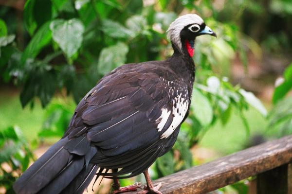
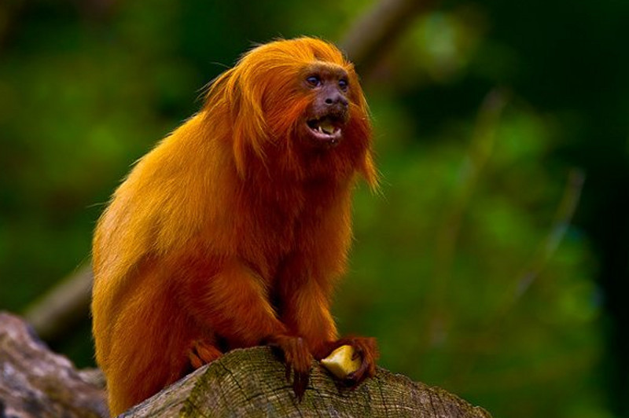
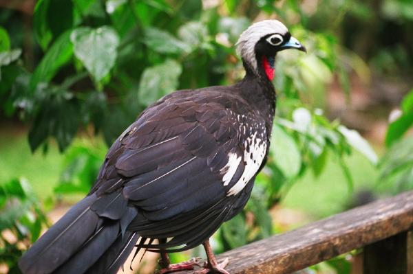
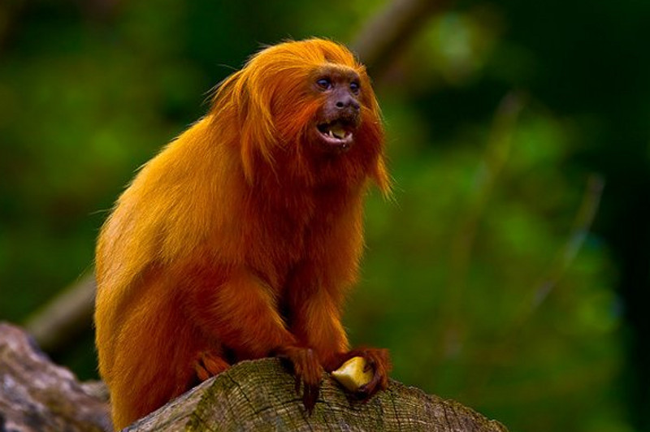
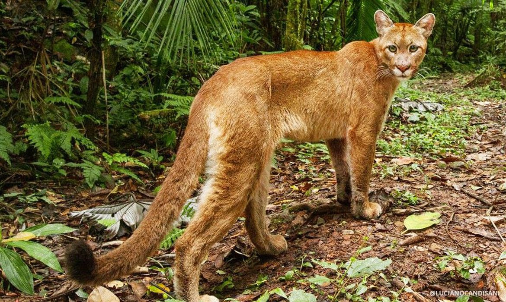
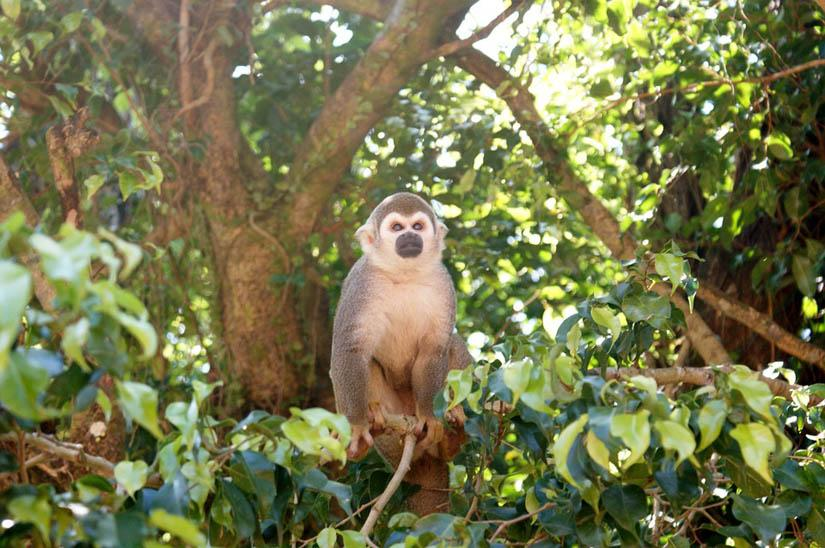
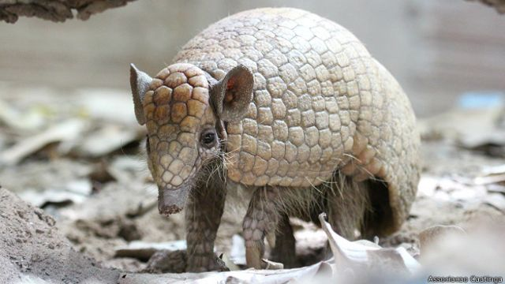
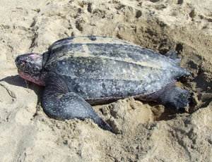
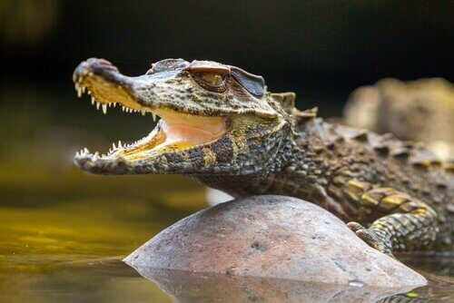

En el catálogo de especies en peligro, se enlistan mamíferos como el saraguato de manto o mono aullador negro o dorado de la costa, el mono aullador mexicano, el mono araña, el mono araña mexicano el yapok o zorro acuático, la musaraña de orejas pequeñas, el hormiguero pigmeo u hormiguero sedoso , la tamandúa mexicana u oso hormiguero (Tamandua mexicana, el agutí negro o zerete prieto, el taira o hurón mayor, el ratón trepador de Xico.
 



los animales en peligro de extincion no solo son los saraguatos de manto o mono aullador negro o dorado de la costa, el mono aullador mexicano, el mono araña, el mono araña mexicano el yapok o zorro acuático, la musaraña de orejas pequeñas, el hormiguero pigmeo u hormiguero sedoso , la tamandúa mexicana u oso hormiguero (Tamandua mexicana, el agutí negro o zerete prieto, el taira o hurón mayor, el ratón trepador de Xico, son muchos mas que esos animales por eso debemos cuidar los animales no solo por que estan en peligro de extincion si no para cuidar siempre la fauna igual que la flora por que todos ellos son tan importantes en nuestra vida cotidiana.
    